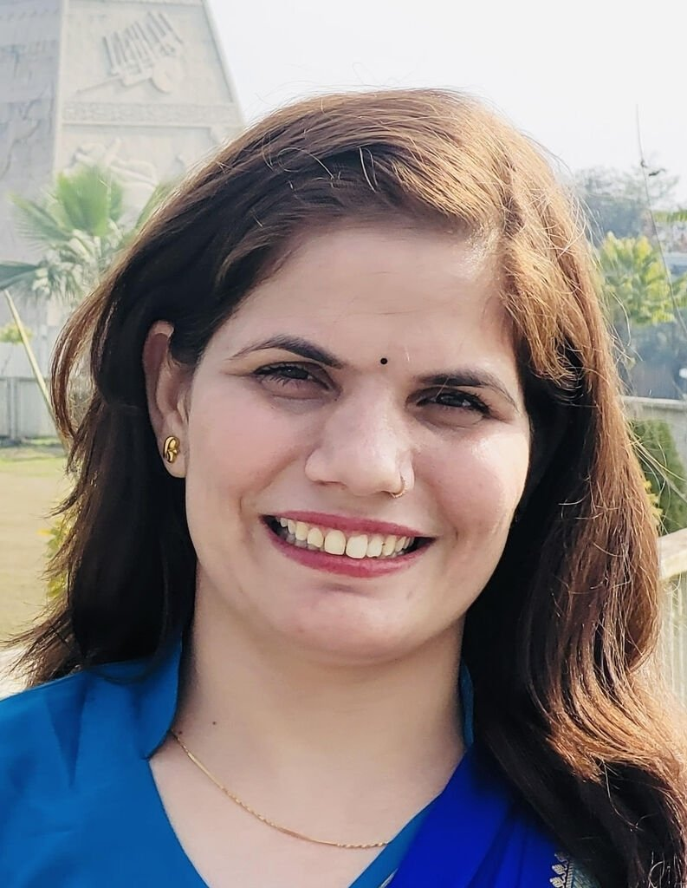

|
Dr. Geeta
Assistant Professor @ CSE, IIT Ropar | Post-doc @ IIT Kanpur | PhD @ IIT Delhi | R&D @ Samsung Electronics| B.Tech @ MNIT Jaipur
|
 |
Assistant Professor
Department of Computer Science & Engineering,
Indian Institute of Technology Ropar, India
Address: Room No. 320, S. Ramanujan Block, IIT Ropar, Main Campus, Rupnagar, Punjab. 140001
Contact: geeta[at] iitrpr [dot] ac [dot] in
Google Scholar, dblp, ORCID, Linkedin
|
Research Interests
Education
|